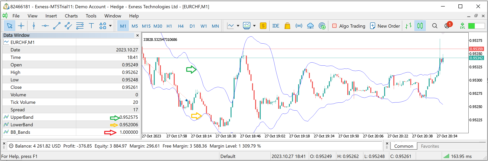

Camilo Mora, Ph.D.
Lets create a simple indicator that will plot the two lines of the Bollinger bands. And create a third variable to display 1 if the price is above the upper band, and 2 if it is below the lower band.
File
